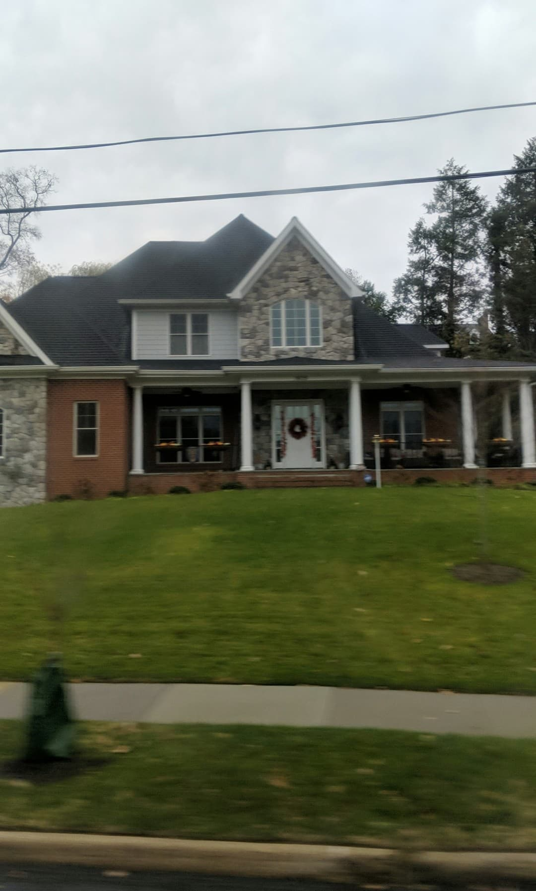

The Future is Here
We pass this house on Army Navy Drive every day on the shuttle. I'm not sure what draws me to it, but it's such a beautiful house with brick, stone, and siding all around. The porch winds around the house and the garage is actually a separate entity from the house itself (not pictured here) with a small roof that covers the walkway. The yard is always well kept, and in the evening the lights brighten up the porch and make it look inviting and welcoming. It's probably only two stories high, but it's still quite a large house, most likely with bedrooms on the second floor and living spaces on the first. Recently they've also decorated for Christmas by putting out nutcrackers and wreaths around the porch posts. This is the kind of house I dream about.
This house reminds me of our future and what it holds. We live on our own in an area totally different from home. We have jobs, albeit you like yours a lot more than I like mine currently. We're experiencing new churches together and meeting other young professionals in the area. We eat at so many amazing restaurants in DC, Arlington, and Alexandria and we get to cook together when we stay home. We have come out of our introverted shells to connect in ways we never considered before, and benefit from those connections every day. Without Sam, you may never have gotten such an amazing opportunity at Full Measure. Without you, I wouldn't have known about Randstad and the National Academy of Sciences. Without our parents, we wouldn't have nearly as much guidance and clarity in our lives. Without our friends, we'd be isolated away from everyone and drift away. We've come so far, emotionally and physically. I look forward to every day with you and I give thanks for every day I've been able to have with you. I can't wait to see where we go next!
« The Here and Now FINALE »